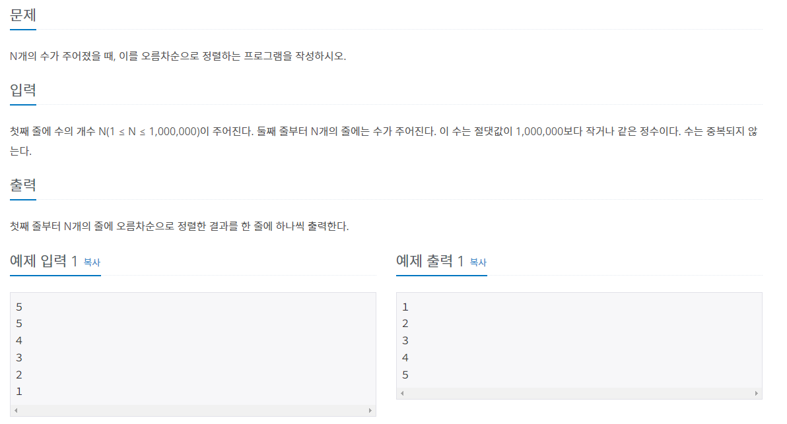

#INFO
난이도 : SILVER5
문제유형 : 정렬 알고리즘
출처 : https://www.acmicpc.net/problem/2751

#SOLVE
제한시간이 2초이고, N이 최대 1,000,000 이기에 버블정렬 같은 O(N^) 이상의 시간복잡도가 걸리는 정렬 알고리즘을 사용하면 시간초과가 발생한다.
따라서 Intro Sort로 구현된 시간복잡도 O(Nlogn)을 가지는 C++ STL에서 제공하는 sort 함수를 사용했다.
#CODE
#include <iostream>
#include <algorithm>
using namespace std;
int main(){
ios::sync_with_stdio(0);
cin.tie(0); cout.tie(0);
int n;
cin >> n;
int arr[1000001] = {0, };
for(int i = 0; i < n; ++i){
cin >> arr[i];
}
sort(arr, arr + n);
for(int i = 0; i < n; ++i)
cout << arr[i] << '\n';
return 0;
}